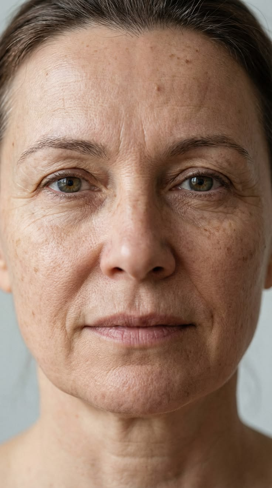
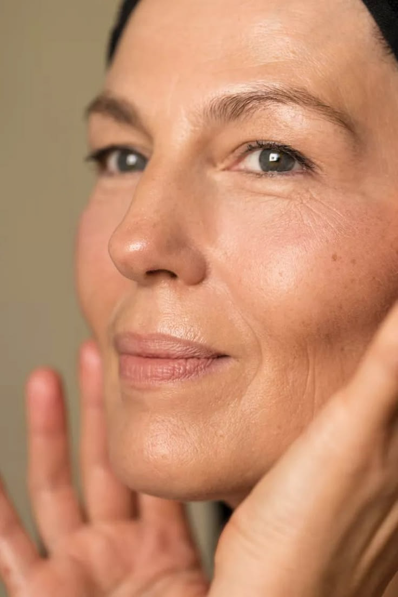
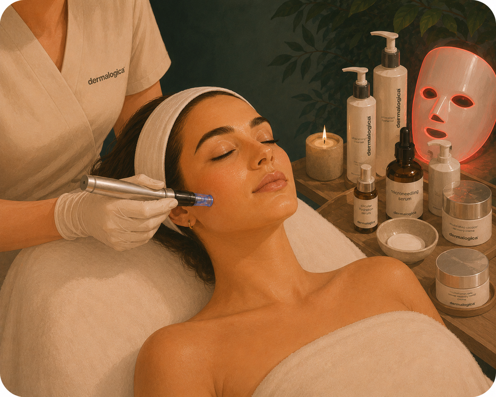
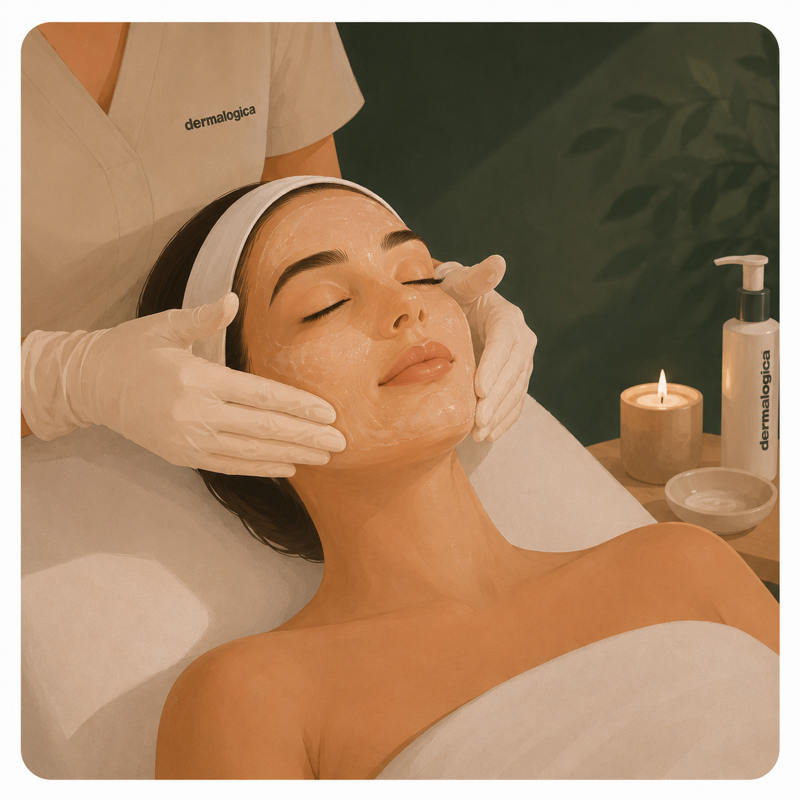

Behandlingar som stimulerar hudens egen kollagenproduktion för fastare, slätare hud.
Rynkor uppstår när hudens kollagen och elastin minskar med åren, ofta i kombination med sol, upprepade ansiktsuttryck och livsstil. Vi anpassar behandlingen efter vilken typ av rynkor du har.
Uppstår av upprepade ansiktsuttryck när musklerna drar ihop huden – typiskt kråksparkar runt ögonen, pannrynkor och "arga rynkan" mellan ögonbrynen. I början syns de bara när du rör ansiktet, men med åren kan de bli synliga även i vila.

Syns även när ansiktet är helt avslappnat. De beror på att hudens kollagen och elastin minskar med åldern, ofta i kombination med solskador och upprepad mimik. Eftersom de sitter i hudens struktur svarar de bäst på behandlingar som bygger nytt kollagen.

Ytliga, fina linjer som ofta beror på att huden saknar fukt. De blir tydligare vid torrhet och kan mjukas upp betydligt när hudbarriären återfuktas – ofta de första ålderstecknen och svarar bra på återfuktande och biostimulerande behandlingar.
När hudens stödjevävnad av kollagen och elastin försvagas tappar huden spänst, och konturerna – särskilt längs käklinje och kinder – blir mjukare. En naturlig del av åldrandet som påskyndas av sol och livsstil; kollagenstimulerande behandlingar hjälper huden att kännas fastare.
💡 Rätt behandling beror på rynkornas typ och djup – boka gärna en konsultation så hittar vi rätt plan för din hud.
Avancerad plasmabehandling som stramar upp huden och mjukar upp fina linjer och rynkor – även kring ögonen – genom att stimulera ny kollagenproduktion.
Se alla plasmapen-behandlingar →
💡 Innebär en läkningsperiod (rodnad och små skorpor, oftast från 5–7 dagar beroende på område) och passar inte alla hudtyper – vi gör alltid en bedömning först.

Avancerad microneedling i flera steg med regenererande cocktail och LED-ljusterapi som stimulerar kollagen, stärker huden och förbättrar elasticitet och fina linjer.
Biostimulerande behandling utan nålar eller fjällning som förbättrar spänst och fasthet och mjukar upp fina linjer – helt utan nedtid.

Resultatinriktad anti-age-ansiktsbehandling som kombinerar avancerad exfoliering, djup återfuktning och massage för förbättrad struktur, spänst och lyster.
Med åren minskar hudens produktion av kollagen och elastin, vilket gör huden mindre elastisk och fast. Sol, upprepade ansiktsuttryck, rökning och torrhet påskyndar processen.
De första fina linjerna blir ofta synliga från 25–30 års ålder, men det är högst individuellt. Genetik spelar stor roll – hur tjock din hud är, hur mycket kollagen du producerar och hur snabbt elastinet bryts ned är delvis ärftligt. Yttre faktorer som sol, rökning, sömn och stress kan flytta tidpunkten avsevärt åt båda håll.
Fina linjer är ytliga – de syns ofta först när huden är torr eller i sidoljuset, och kan försvinna vid återfuktning. Rynkor är djupare och permanenta – de finns kvar även när huden är välåterfuktad och avslappnad. De flesta fina linjer utvecklas till rynkor över tid om de inte hanteras.
UV-strålning är den enskilt största orsaken till för tidigt åldrande av huden – det kallas fotoåldring. Solen bryter ned kollagen och elastin direkt och skapar fria radikaler som skadar hudcellerna långsiktigt. Forskning visar att upp till 80 % av synligt åldrande i ansiktet beror på solen, inte på själva åldern.
Ja. Vid sömnbrist ökar kortisol, ett stresshormon som bryter ned kollagen. Högglykemisk kost (mycket socker och snabba kolhydrater) bidrar till glykation – en process där socker binder till kollagen och gör huden styvare och mindre elastisk. Kronisk stress driver inflammation som påskyndar åldrandet. Hudhälsa är till stor del livsstil.
Det beror på rynkornas typ och djup. Fina linjer och nedsatt spänst svarar ofta bra på microneedling och PRX-T33. För mer uttalad uppstramning och rynkor kring ögonen är plasmapen (Plaxel+) ett kraftfullt alternativ. Vi rekommenderar en konsultation så vi väljer rätt för dig.
Vi arbetar med hudens egen kollagenproduktion för att mjuka upp och förebygga rynkor – men vi raderar inte djupa rynkor helt. Vi använder inte injektioner (botox eller fillers); vid djupa, dynamiska rynkor kan det vara ett mer effektivt komplement. Vi är alltid ärliga med vad som är realistiskt vid din konsultation.
Det varierar per behandling. Microneedling och peeling ger lätt rodnad eller fjällning i några dagar, PRX-T33 har ingen nedtid, och plasmapen innebär en läkningsperiod med rodnad och små skorpor i ca 5–14 dagar.
Ja, ofta är det den mest effektiva strategin. Microneedling kombinerat med peeling eller PRX-T33 ger djupare resultat över tid. Vi planerar en behandlingsplan tillsammans baserat på dina mål, din hud och vad som är realistiskt – snarare än att rekommendera enstaka behandlingar isolerat.
De fyra ingredienser med starkast vetenskapligt stöd är: retinoider (retinol, retinal) som stimulerar kollagen och cellförnyelse, vitamin C som skyddar mot fria radikaler och bidrar till kollagensyntes, peptider som signalerar huden att bygga upp sig själv, och solskydd (SPF 50) som förhindrar nedbrytning av kollagen. SPF är inte glamoröst – men det är det viktigaste.
Retinoider är guldstandard för anti-age – de stimulerar kollagen, snabbar upp cellförnyelse och mjukar upp både fina linjer och pigmentering. Du kan börja runt 25–30 års ålder, men det är aldrig för sent att starta. Börja försiktigt: 2–3 kvällar i veckan, bygg upp till varje kväll. Använd alltid SPF 50 dagen efter. Retinal är en starkare och snabbare variant än retinol. Undvik under graviditet och amning.
Vitamin C (oftast L-askorbinsyra i koncentration 10–20 %) är en antioxidant som neutraliserar fria radikaler från sol och miljö, ljusar upp huden och bidrar till kollagensyntes. Använd på morgonen efter rengöring, före fuktkräm och SPF. Förvara mörkt och svalt – ingrediensen oxiderar lätt. Blir serumet mörkbrunt har det förlorat sin verkan.
Inte nödvändigtvis – men de fyller olika roller. Peptider är små proteinfragment som signalerar huden att producera mer kollagen. Niacinamid (vitamin B3) stärker hudbarriären, reglerar talg och jämnar ut hudton. Hyaluronsyra binder fukt och ger en omedelbar plump-effekt. En enkel rutin kan klara sig med 2–3 av dessa, valda efter din huds behov.
Tunnaste konsistens först, tjockaste sist – så absorberas allt. Morgon: rengöring → vitamin C → niacinamid/peptid-serum → hyaluronsyra → fuktkräm → SPF 50. Kväll: rengöring (gärna dubbelrengöring vid smink) → exfoliering eller retinol (varannan kväll) → peptid-serum → fuktkräm. Använd inte vitamin C och retinol samtidigt – C på morgonen, retinol på kvällen.
Det är den enskilt viktigaste anti-age-produkten du kan använda – mer än något serum, peeling eller behandling. Utan dagligt solskydd bryts allt arbete kontinuerligt ned. SPF 50 med bredspektrumskydd (UVA + UVB) varje dag, året runt – även i Sverige, även när det är molnigt, även inomhus om du sitter nära fönster.
Kollagen byggs upp gradvis, så resultatet utvecklas oftast över 8–12 veckor. Flera behandlingar kan behövas för optimalt resultat.
Huden fortsätter att åldras, så resultatet underhålls bäst med en behandlingsplan och bra hudvård. Dagligt solskydd bromsar nedbrytningen av kollagen.
Dagligt solskydd (SPF 50) är det enskilt viktigaste, tillsammans med god återfuktning, antioxidanter och att undvika rökning.
"Isabella genomförde en microneedling-kur på 4 behandlingar. Huden känns fastare, fylligare och jag upplever mindre synliga rynkor. Väldigt nöjd och kommer definitivt tillbaka!"
Google"Den bästa Isabella – så duktig, trevlig och alltid så hjälpsam."
Google"Isabella är jättetrevlig och kunnig! Rekommenderar verkligen henne."
Google"Isa var professionell och trevlig – fick en så fin lyster i huden efter behandlingen. Skulle definitivt komma tillbaka."
Bokadirekt"Isabella är så kunnig. Ger bra råd, man känner sig trygg med henne. Kommer snart tillbaka!"
Bokadirekt"Alltid supernöjd."
BokadirektBoka en konsultation så bedömer vi din hud och rekommenderar bästa behandlingsupplägg.
Välj längd
Välj område
💡 Plasmabehandling med en läkningsperiod (rodnad och små skorpor, oftast från 5–7 dagar beroende på område). Passar inte alla – bl.a. inte melaninrik hud (Fitzpatrick 4–6) pga risk för hyperpigmentering, gravida/ammande eller aktiva hudbesvär. Vi gör alltid en bedömning först – boka gärna en konsultation om du är osäker.
Välj område nedan.